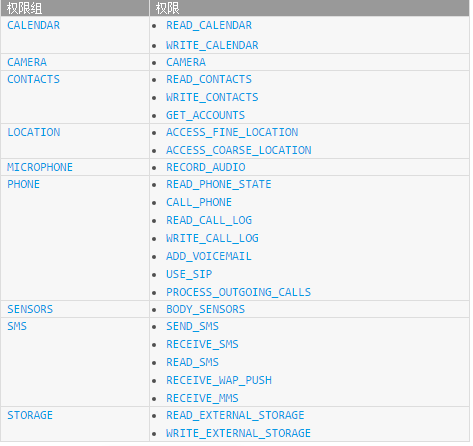

Android 6.0 运行时权限管理
2016年12月14日
Android M(6.0)之后对Android的权限系统进行了修改，在6.0系统中加入了运行时权限功能。就是说用户在安装应用的时候无需授权所有权限的申请，而是在软件使用过程中进行申请。
权限类型
新的权限策略分为两类，一类是普通权限，一类是危险权限。普通权限是指那些不会直接威胁到用户的安全和隐私的权限，对于这部分的权限我们只需在Manifest中声明使用即可。而危险权限可能会涉及到用户的隐私信息，如读取联系人信息，设备地理位置等，需要用户手动执行授权。
危险权限一共有9组24个权限(如下图)，除此之外的权限就都是普通权限。

如何在程序运行时候申请权限
- 首先我们需要了解两个变量
- PackageManager.PERMISSION_DENIED // 该权限是被拒绝的
- PackageManager.PERMISSION_GRANTED // 该权限是被授权的
相关方法
ContextCompat.checkSelfPermission(Context context, int permission);
作用：检查权限是否已经授权
第一个参数是Context,第二个是相关申请的权限名（eg: Manifest.permission.CALL_PHONE）然后返回值与上述两个变量做比较用于判断结果。ActivityCompat.requestPermissions(Activity act, String[] permissions, int requestCode);
作用：请求相关权限
第一个参数是Activity实例，第二个为申请权限的String数组,第三个为请求码用于结果的回调。onRequestPermissionsResult(int requestCode, String [] permissions, int [] grantResult);
作用：用于请求的回调 （Activity / Fragment中）
参数依次是请求码，权限数组，授权权限数组（用于与上述两常量做比较）
实例代码
|
|